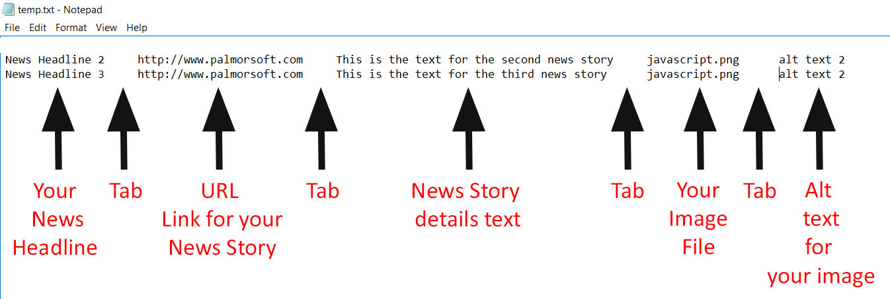

Created by Eric Rousey
Download SBP News ScrollerVersion 1.12 (zip file) Working Demos of
|
SBP News Scroller is a simple but highly customizable horizontal news/photo scroller that can be added to any webpage and viewed by any user running Javascript. It is written in Javascript and uses a simple tab-delimited database to reference news stories and photos. This database can easily be edited by someone without any technical skills or knowledge of HTML, CSS, or Javascript. Setting up the script on a webpage also requires little-to-no knowledge of HTML, CSS, or Javascript. Everything you need to set up and edit the basic scroller is simple and easy to understand, and adding and removing stories and photos to the SBP News Scroller is as simple as editing the database file in any text editing software (such as Notepad, Microsoft Word, etc.).
To set up the SBP News Scroller, simply go to the directory on your website where you want to deploy it and create a new subdirectory on called "SBP-news-scroller" (without the quotes). New copy all the files from the SBP-news-scroller subdirectory in the SBP News Scroller zip file you downloaded into this new subdirectory. Then, whereever you want the scroller to appear in your webpage, insert this code:
<!--News Scroller-->
<!--You can omit the next line if you already have jQuery on your page-->
<script type="text/javascript" src="https://ajax.googleapis.com/ajax/libs/jquery/1.12.4/jquery.min.js"></script>
<!--News Scroller-->
<script type="text/javascript" src="SBP-news-scroller/SBPnewsscroller.js"></script>
<script>
SBPnewsscroller("scrollername", "625px", "450px", 7, "sample-database3.txt", "70%", "1.5em", "1em", "ALLBUTTONS");
</script>
<div class="scrollername" width="625px" height="450px"> <!--Put anything here that you want people who aren't running Javascript to see--> </div>
The only parameters here that you need to change are the ones highlighted in yellow. Each paremeter, except the delay time, should be in quotes.
? ?
|
Please note that each of these parameters must be specified.
The first parameter is your scroller name (here it's "scrollername"). Each scroller on your page must have its own unique scroller name. It should match the class name of your div.
The second parameter is the width of your scroller. It should match the width of your div. Here it's "625px". This paremeter can take px or a %. For example, you could use "200px" or "20%".
The third parameter is the height of your scroller. It should match the height of your div. Here it's "450px". This paremeter can take px or a %. For example, you could use "200px" or "20%".
The fourth parameter is the delay time (in seconds) that you want the scroller to wait before scrolling between items. Set this to 0 if you don't want it to automatically scroll. Here it's set to 7 seconds. This parameter is the only one that should not be in quotes.
The fifth parameter is the name of your database. You will creat this database file in your SBP-news-scroller subdirectory. Here it's set to "sample-database3.txt".
The sixth parameter is the width of your images. You must include this paremeter even if you don't plan on using images in your scroller. This paremeter can take px or a %, but I strongly recommend using a percentage (to make your scroller more responsive). Here it's set to "75%".
The seventh parameter is the size of your news headline font. This can take px, pt, or em font sizes. Here it's set to "1.5em". You can further cutomize your headline font by styling either the H3 element or the class ".yourscrollernameh3Class" in your CSS stylesheet (with your scroller name subsituted for yourscrollername) .
The eighth parameter is the size of your news story details font. This can take px, pt, or em font sizes. Here it's set to "1em". You can further cutomize your story details font by styling either the H4 element or the class ".yourscrollernameh4Class" in your CSS stylesheet (with your scroller name subsituted for yourscrollername) .
The ninth and final parameter is for your button options. You have four options here (choose one):
Setting up your database file is easy. Just create a simple txt file and save it in your SBP-news-scroller subdirectory. Each line in the database is a separate entry, with each of its five fields seperated by a tab (hitting the tab button on your keyboard). Here is a sample database, for example:

If you specifiy an image file you can either give a full URL to the file (i.e., "http://photobucket.com/112422/mypic.jpg" ) or just the file name. If you just give the file name, you need to make sure the image is saved in your SBP-news-scroller subdirectory.
You can omit any of these fields on any given line, but all the tabs must still be included. For example, if you just wanted to show photos on your scroller, with no headlines, links or news stories, your database might look like this:
[TAB][TAB][TAB]http://mysite.com/photo1.jpg[TAB]alt text for photo1
[TAB][TAB][TAB]http://mysite.com/photo2.jpg[TAB]alt text for photo2
Or if you wanted to include text news stories only, with no photos, it might look like this:
News Headline1[TAB]http://mysite.com/story1.html[TAB]News story 1 details[TAB][TAB]
News Headline2[TAB]http://mysite.com/story2.html[TAB]News story 2 details[TAB][TAB]
News Headline3[TAB]http://mysite.com/story3.html[TAB]News story 3 details[TAB][TAB]
You could even mix it up if you like:
News Headline1[TAB]http://mysite.com/story1.html[TAB]News story 1 details[TAB][TAB]
[TAB][TAB][TAB]http://mysite.com/photo1.jpg[TAB]alt text for photo1
News Headline2[TAB]http://mysite.com/story2.html[TAB]News story 2 details[TAB][TAB]
Just be careful not to put in too many tabs in your lines. Each line in your database should have four tabs.
Whenever you change the database file, just re-upload it to your SBP-news-scroller subdirectory and any scroller(s) that use it will automatically update themselves.
Running more than one scroller on the same page is easy with SBP News Scroller. You just have to remember to give each scroller its own unique scroller name and its own div. Each scroller can have its own unique parameters and use its own database (or share a database with another scroller). Here is an example of code that runs two scrollers on the same page. Note that you only need to include the script call on you page once (before the first script):
For where you want the first scroller:
<!--News Scroller-->
<!--You can omit the next line if you already have jQuery on your page-->
<script type="text/javascript" src="https://ajax.googleapis.com/ajax/libs/jquery/1.12.4/jquery.min.js"></script>
<script type="text/javascript" src="SBP-news-scroller/SBPnewsscroller.js"></script>
<script>
SBPnewsscroller("scrollername", "625px", "450px", 7, "sample-database3.txt", "70%", "1.5em", "1em", "ALLBUTTONS");
</script>
<div class="scrollername" width="625px" height="450px"> <!--Put anything here that you want people who aren't running Javascript to see--> </div>
For where you want the second, third, etc. scrollers:
<script>
SBPnewsscroller("scrollername2", "225px", "350px", 4, "sample-database2.txt", "80%", "1.5em", "1em", "NOBUTTONS");
</script>
<div class="scrollername2" width="225px" height="350px">
<!--Put anything here that you want people who aren't running Javascript to see-->
</div>
Modern "responsive" design (so webpages and elements scale automatically depending on the device they're being viewed on) is a very important part of modern web design. To that end, SBP News Scroller has a resize function that can be called when your webpage is resized (such as on a cellphone switching from portrait to landscape mode). This allows you to set "breakpoints" at certain minimum widths that will scale down (or up) the size of your scroller and its font sizes.
The SBP resize function is called like this:
SBPresize("scroller1", "500px", "350px", "2em", "0.9em");
The first parameter is your existing scroller name. The second is the new width you want to resize that scroller to. The third is the new height you want to resize to. The fourth is the new size for your news headline font. And the fifth parameter is the new size for your news story details font.
To actually use this call to include breakpoints on your page, first you need to include the following parmeters in your body tag:
<body onload="SBPresponsive()" onresize="SBPresponsive()">
Now, if you wanted to set breakpoints at 600px and 900px screen-width, with a default for less than 600px screen-width, here is the code you would use on your page (widths highlighted):
<!--News Scroller-->
<!--You can omit the next line if you already have jQuery on your page-->
<script type="text/javascript" src="https://ajax.googleapis.com/ajax/libs/jquery/1.12.4/jquery.min.js"></script>
<script type="text/javascript" src="SBP-news-scroller/SBPnewsscroller.js"></script>
<script>
var initialSetup = 0;
function SBPresponsive()
{
if (initialSetup === 0)
//these are the initial setup calls, adjusted by different screen widths
{
if ($(window).width() > 900)
{
SBPnewsscroller("scroller1", "800px", "450px", 7, "sample-database.txt", "75%", "2em", "1em", "ALLBUTTONS");
SBPnewsscroller("scroller2", "400px", "350px", 5, "sample-database2.txt", "75%", "2em", "1em", "NOBUTTONS");
initialSetup = 1;
}
else if ($(window).width() > 600) { SBPnewsscroller("scroller1", "500px", "350px", 7, "sample-database.txt", "75%", "2em", "0.9em", "ALLBUTTONS"); SBPnewsscroller("scroller2", "400px", "300px", 5, "sample-database2.txt", "75%", "2em", "0.9em", "NOBUTTONS"); initialSetup = 1; } else { SBPnewsscroller("scroller1", "300px", "300px", 7, "sample-database.txt", "75%", "1em", "0.9em", "ALLBUTTONS"); SBPnewsscroller("scroller2", "300px", "300px", 5, "sample-database2.txt", "75%", "1em", "0.9em", "NOBUTTONS"); initialSetup = 1; } } //these are resize function calls made if a user's screen is resized: else { if ($(window).width() > 900) { SBPresize("scroller1", "800px", "450px", "2em", "1em"); SBPresize("scroller2", "400px", "350px", "2em", "1em"); }
else if ($(window).width() > 600)
{
SBPresize("scroller1", "500px", "350px", "2em", "0.9em");
SBPresize("scroller2", "400px", "300px", "2em", "0.9em");
}
else
{
SBPresize("scroller1", "300px", "300px", "1em", "0.9em");
SBPresize("scroller2", "300px", "300px", "1em", "0.9em");
}
}
}
</script>
<div class="scroller1">
<!--Put anything here that you want people who aren't running Javascript to see-->
</div>
<div class="scroller2">
<!--Put anything here that you want people who aren't running Javascript to see-->
</div>
If you would like to edit the image files for the left and right navigation buttons, you can find them in your SBP-news-scroller subdirectory, named button1.png (for the right button) and button2.png (for the left button).
If you have any questions, comments, corrections, bug reports, or suggestions please email me at eric@pallmorsoft.com. I'm also interested in seeing any implementations of the scroller you may have, so send me those too if you don't mind. I'm always impressed by the creative things people can do with my basic scripts. So I look forward to hearing what YOU made happen with SBP News Scroller.